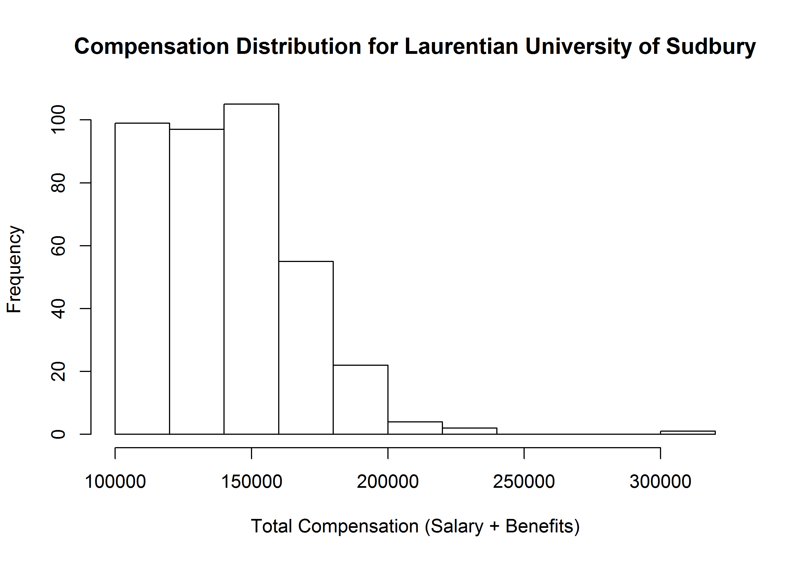
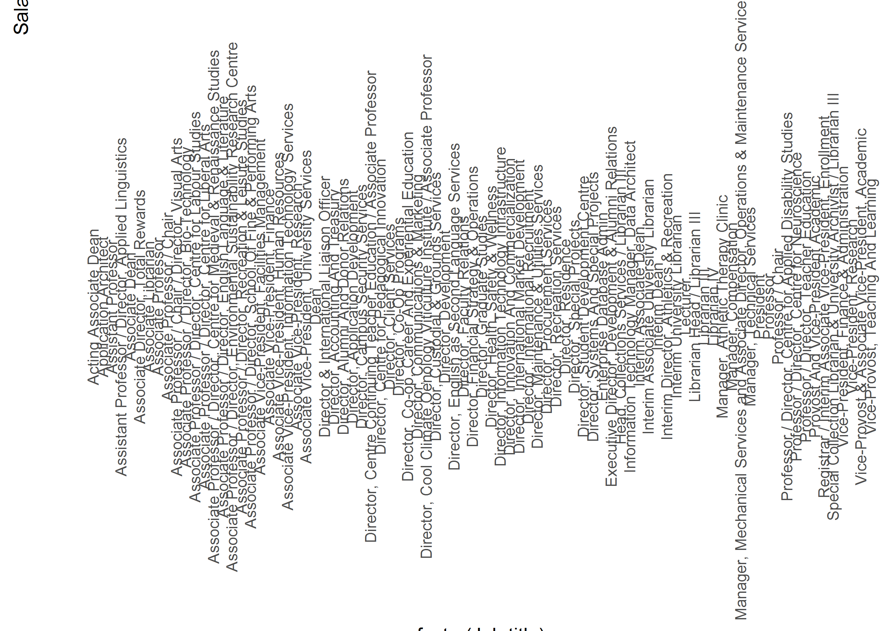

Chapter 2 Analysis of 2015 Salaries
2.1 Salaries by University
2.1.1 Individual Salary Distributions
rawData = read.csv(file.path(getwd(), "Inputs", "Salary Disclosure by year", "Curated Data", "2015", "merged_file.csv"), stringsAsFactors = F)
rawData[, 4] = as.numeric(gsub("[$,]","", rawData[, 4]))
rawData[, 5] = as.numeric(gsub("[$,]","", rawData[, 5]))
rawData$Total.Compensation = rawData$Salary.Paid + rawData$Taxable.Benefits
rawData_universities = rawData[rawData$Sector == "Universities", ]
for (i in (1:length(unique(rawData_universities$Employer)))){
#print(unique(rawData_universities$Employer)[i])
filtered_df = rawData_universities[rawData_universities$Employer == unique(rawData_universities$Employer)[i], ]
hist(filtered_df$Salary.Paid, main = paste0("Compensation Distribution for ", unique(rawData_universities$Employer)[i]), xlab = "Total Compensation (Salary + Benefits)")
}

2.1.2 Salary spread
# boxplot(x = rawData_universities$Salary.Paid, data = filtered_df, formula = rawData_universities$Salary.Paid ~ rawData_universities$Employer)
top_universities = c("University of Toronto", "University of Ottawa", "University of Waterloo", "University of Western Ontario")
set1 = unique(rawData_universities$Employer)[1:12]
set2 = unique(rawData_universities$Employer)[13:25]
set3 = unique(rawData_universities$Employer)[25:55]
# Find the distribution of salaries across schools
rawData_universities_split_1 = subset(rawData_universities, Employer %in% set1)
rawData_universities_split_2 = subset(rawData_universities, Employer %in% set2)
rawData_universities_split_3 = subset(rawData_universities, Employer %in% set3)
boxplot(Salary.Paid ~ Employer, data = rawData_universities, las=2)boxplot(Salary.Paid ~ Employer, data = rawData_universities_split_1, las=2)boxplot(Salary.Paid ~ Employer, data = rawData_universities_split_2, las=2)boxplot(Salary.Paid ~ Employer, data = rawData_universities_split_3, las=2)ggplot(rawData_universities, aes(x=factor(Employer), y=Salary.Paid, fill=factor(Employer))) + geom_boxplot() + theme(axis.text.x = element_text(angle=90, vjust=0.5))ggplot(rawData_universities, aes(x=factor(Employer), y=Salary.Paid, fill=factor(Employer))) + geom_boxplot() + theme(axis.text.x = element_text(angle=90, vjust=0.5)) + ylim(0,500000)## Warning: Removed 4 rows containing non-finite values (stat_boxplot).rawData_universities$City = NA2.2 Detailed look: Brock University
# Find the distribution of salaries vs roles (for Brock, e.g.)
rawData_universities_Brock = rawData_universities[rawData_universities$Employer == "Brock University", ]
#table(rawData_universities_Brock$Job.title)
plot(table(rawData_universities_Brock$Job.title))ggplot(rawData_universities_Brock, aes(x=factor(Job.title), y=Salary.Paid)) + geom_boxplot() + theme(axis.text.x = element_text(angle=90, vjust=0.5)) + ylim(0,500000)
rawData_universities_Brock_noDup = rawData_universities_Brock[(duplicated(rawData_universities_Brock$Job.title) | duplicated(rawData_universities_Brock$Job.title, fromLast = TRUE)), ]
rawData_universities_Brock_noDup$Job.title = with(rawData_universities_Brock_noDup, reorder(Job.title, Salary.Paid, median))
ggplot(rawData_universities_Brock_noDup, aes(x=factor(Job.title), y=Salary.Paid)) + geom_boxplot() + theme(axis.text.x = element_text(angle=90, vjust=0.5)) + ylim(0,500000)